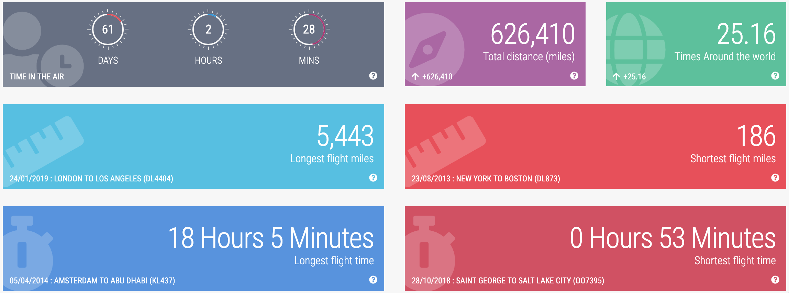

ABOUT ME
A passionate technologist. I attend as many conferences as I can, travel as much as I can with my amazing wife and try to eat some amazing food; all while meeting passionate and interesting people around the world.

Sr. Technical Program Manager on the Disaster Relief by Amazon team. Born and raised in Puerto Rico; holds a BS in Computer Engineering from the UPR-Mayaguez and a MS in Information Security from Lipscomb University. Worked on mobile technologies for several years including at Deloitte building an enterprise app marketplace with over 40 apps and iPad applications for the top leaders in the company including the CEO. Later joined NBC News as the mobile program manager before joining Amazon. At Amazon I worked on payments, royalties and revenue automation for Prime Video. In 2017 I had the chance to participate as a technical volunteer in filling a plane with relief items for Puerto Rico after Hurricane Maria. Being able to mobilize the technology, people and resources of Amazon for a cause like this was "the experience of a lifetime". After that volunteer opportunity I decided to join the Disaster Relief by Amazon team permanently and I'm now in charge of our corporate in-kind donations and mobile disaster pickup points program.
If you are interested in connecting professionally check out my LinkedIn page http://linkedin.com/in/abediaz. If you prefer pictures follow me on Instagram http://instagram.com/abe238 or Twitter http://twitter.com/abe238.
Likes: Traveling (see stats below), Cider, RaspberryPis, Ice Baths and Contrast Showers
